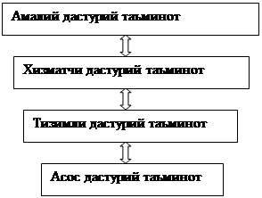

1-Ma’ruza. Kirish. Operatsion
tizimlar fanining mazmuni va mohiyati
Reja:
1.
Hisoblash tizimlari tarkibi
2.
Dasturiy ta’minot tarkibi
3.
Tizimli dasturiy ta’minot
4.
Boshqa dasturiy ta’minot sinflari
Kirish
Ma’lumki, axborot texnologiyalarining inson
faoliyati hamma jabxalarga kirib borish jarayoni borgan sari rivojlanib chuqurlashib
bormoqda. Umumiy soni, ko‘p yuz milliondan oshib ketgan, keng tarqalgan shaxsiy
kompyuterlardan tashqari, hisoblash tizimlarining maxsus vositalari ham ko‘payib
bormoqda. Bu turli-tuman hisoblash texnikasidan foydalanuvchilar soni ham ko‘payib
borayotganini bildiradi, bunda ikki qarama-qarshi tendentsiyani rivojlanishi kuzatilmoqda.
Bir tomondan, axborot texnologiyalari borgan sari murakkablashmoqda va ularni qo‘llash
uchun, va ularni keyingi rivojlanishi uchun juda chuqur bilimlar talab qilinadi.
Boshqa tomondan, foydalanuvchilarning kompyuterlar bilan muloqati soddalashmoqda.
Kompyuterlar va axborot tizimlari borgan sari “do‘stona” bo‘lib bormoqda, va hatto
ular informatika va hisoblash texnikasi sohasida mutahassis bo‘lmagan odamlar uchun
ham tushunarli bo‘lib bormoqda. Bu narsa, eng avvalo foydalanuvchilar va ularning
dasturlari, hisoblash texnikasi bilan maxsus (tizimli) dasturiy ta’minot – operatsion
tizim orqali muloqat qilganliklari uchungina yuzaga keldi.
OT, foydalanuvchilar uchun ham, bajariluvchi
ilovalar uchun ham interfeysni tashkil etadi. Foydalanuvchilar va ko‘pgina hizmatchi
dasturlar, DTdan hamma dasturlarda tez-tez uchraydigan amallarni bajarishni so‘raydi.
Bunday amallarga, birinchi navbatda, kiritish-chiqarish, biror-bir dasturini ishga
tushirish va to‘xtatish, qo‘shimcha xotira blokini olish yoki uni bo‘shatish va
boshqa ko‘pgina amallar kiradi. Bunday amallarni har safar dasturlash va ikkilik
kod sifatida dastur ichiga bevosita kiritish maqsadga muvofiq emas balki, ularni
birgalikda yig‘ib dasturdan “so‘rov” orqali bajarishga berish qulaydir. Bu o‘z navbatida
OT ning muhim funktsiyalaridan biridir. Amaliy dasturlar, va ko‘pgina tizimli ishlov
beruvchi dasturlar, (m-n, dasturlash tizimlari yoki ma’lumotlarni boshqarish tizimlari)
kompyuter apparaturasi bilan bevosita bog‘lana
olmaydi va ular bilan OT ga murojaat etish orqali bog‘lanadilar. Foydalanuvchilar
uchun ham, OT komandasini kiritish bilan yoki tizim taklif qiladigan mumkin bo‘lgan
harakatlar orqali o‘z dasturlari va kompyuter bilan muloqat qiladilar. Bunday o‘zaro
muloqat faqat OT orqaligina amalga oshiriladi.
Bunday muhim funktsiyani bajarishdan tashqari, OT hisoblash resurslarini samarali
taqsimlash va hisoblashni ishonchli tashkil
etishga javob beradi.
OT asoslarini va ularning ishlash printsiplarini bilish, kompyuterdan samarali foydalanishga olib keladi.
OT larni chuqur o‘rganish, avvalambor bu bilimlarni, dasturiy ta’minot yaratishda
ishlatishga imkon beradi.
Albatta, bizning mamlakatimizda hozirgi vaqtda, amalda yangi OT lar yaratish
ustida ish olib borilmayaptgan bo‘lsa ham, murakkab axborot tizimlarini ishlab chiqish,
zamonaviy OT larda ishlashga mo‘ljallangan dasturlar, majmuasi va ilovalar yaratish
ishlari jadal sura’tda olib borilmoqda. Shuning uchun ham OT larni va ularni ishlash
printsiplari va hisoblashlarni tashkil etishni bilish zarurdir. Hozirgi vaqtda,
kompyuterda ishlash kamlik qiladi, balki hisoblashlarni tashkil etishni tushunish shartdir.
1. Hisoblash tizimi (kompyuter va tarmoqlar) tarkibi.
Hisoblash tizimi tarkibi konfiguratsiya deb ataladi. Odatda hisoblash texnikasining
apparat va dasturiy vositalari alohida olib o‘rganiladi.
Shuning uchun ham mos ravishda hisoblash tizimlari apparat konfiguratsiyasi va dasturiy
konfiguratsiyasi alohida olib o‘rganiladi. Bunday bo‘linish axborot texnologiyalari
uchun muhim ahamiyatga egadir, chunki ko‘p xollarda alohida olingan masala
yechimini ham apparat, ham dastur vositalari yordamida ta’minlash mumkin.
1.1.
Apparat ta’minoti.
Hisoblash tizimlarining apparat ta’minoti tarkibiga, apparat
konfiguratsiyani tashkil etuvchi qurilma va asboblar kiradi. Zamonaviy kompyuter va hisoblash
majmua (kompleks)lari blok-modulli konstruktsiya (tuzilish)dan iborat. Ma’lum ishlarni bajarishga
zarur bo‘lgan apparat konfiguratsiyani tayyor blok va qismlardan yig‘ib olish
mumkin.
Qurilmalarning, markaziy protsessorga (Central Processing
UNIT, CPU) nisbatan joylashishiga qarab tashqi va ichki qurilmalarga ajratamiz.
Tashqi qurilmalar, qoida bo‘yicha, ma’lumotlarni kiritish va
chiqarish qurilmalaridir, ularni odatda periferik qurilmalar deb ham ataladi. Bundan
tashqari ma’lumotlarni uzoq saqlashga mo‘ljallangan qurilmalar ham tashqi qurilmalarga
kiradi.
Alohida blok va qismlar
orasidagi kelishuvchanlik, birgalikda ishlashdagi moslanuvchanlik, apparatli
interfeys deb ataluvchi o‘tish apparat-mantiqiy qurilmalari yordamida bajariladi.
Hisoblash texnikasidagi apparat interfeysiga belgilangan standartlar protokollar
deyiladi. Shunday qilib, protokol – bu qurilma yaratuvchilari tomonidan, bu qurilmaning
boshqa qurilmalar bilan muvaffaqiyatli va kelishilgan holda birgilikda ishlashi
uchun, ishlab chiqiladigan texnik shartlar majmuasidir.
1.2.
Dasturiy ta’minot
Dastur – buyruqlarning
tartiblangan ketma-ketligidir. Kompyuter uchun tuzilgan har dastur vazifasi – apparat
vositalarni boshqarishdir. Birinchi qarashda dasturning qurilmalar bilan xech qanday
bog‘liqligi yo‘qdek ko‘rinadi, ya’ni masalan, dastur kiritish qurilmlaridan ma’lumot
kiritishni va chiqarish qurilmalariga ham ma’lumot chiqarishni talab qilmasa ham,
baribir uning ishi kompyuterning apparat qurilmalarini boshqarishga asoslangan.
Kompyuterda, dasturiy va apparat ta’minot, doimo uzilmas aloqada
va uzluksiz bog‘lanishda ishlaydi. Biz bu ikki kategoriyani alohida ko‘rib chiqayotganimizga
qaramasdan, ular orasida dialektik aloqa mavjudligi va ularni alohida ko‘rib chiqish
shartli ekanlgini esdan chiqarmaslik kerak.
Kompyuterlar va hisoblash tizimlarining dasturiy ta’minoti tuzilishini
dasturiy konfiguratsiya deb ham ataladi. Dasturlar orasida xuddi kompyuterning fizik
qismlari orasidagi kabi o‘zaro aloqa mavjud. Aksariyat ko‘pgina dasturlar, quyiroq
darajadagi boshqa dasturlarga tayanib ishlaydi. Bunday bog‘lanish dasturlararo interfeys
deyiladi. Bunday interfeys (muloqot) ning mavjudligi texnik shartlar va o‘zaro aloqa
qoidalariga asoslangan bo‘lsa ham, amalda u dasturiy ta’minotni o‘zaro aloqada bo‘lgan
bir nechta sathlar (daraja)larga taqsimlash bilan ta’minlanadi. Dastur ta’minoti
sathlari piramida tuzilishiga egadir. Har bir keyingi sath oldingi sathlar dasturiy
ta’minotiga tayanadi. Bunday ajratish, hisoblash tizimining dasturlarni o‘rnatishdan
boshlab, to amalda ekspluatatsiya qilish va texnik xizmat ko‘rsatishgacha bo‘lgan
ish faoliyatining hamma bosqichlari uchun qulaydir. Shunga alohida etibor berish
kerakki, har bir yuqoridagi sath butun tizimning funktsionalligini oshiradi. Masalan,
asos dasturiy ta’minoti sathiga ega bo‘lgan hisoblash tizimi ko‘p funktsiyalarni
bajara olmaydi, ammo u tizimli dasturiy ta’minotni o‘rnatishga imkon beradi, ya’ni
sharoit yaratadi.

Rasm 1.1.
Asos dasturiy ta’minoti. Dasturiy ta’minotning eng quyi
sathi-asos dasturiy ta’minotidan iboratdir. Bu ta’minot asos apparat vositalari
bilan aloqaga javob beradi. Qoida bo‘yicha, asos dasturiy vositalari bevosita asos
qurilmalari tarkibiga kiradi va doimiy xotira deb ataladigan maxsus mikrosxemalarda
saqlanadi. Dastur va ma’lumotlar doimiy xotira (DX) mikrosxemalariga ularni ishlab
chiqish vaqtida yoziladi va ularni ishlash jarayonida o‘zgartirish mumkin emas.
Amalda, ishlatish vaqtida asos dasturiy vositalarini o‘zgartirish
zaruriyati kelib chiqsa, DX mikrosxemasi o‘rniga qayta dasturlash imkoniga ega bo‘lgan
doimiy xotira qurilmasidan foydalaniladi. Bu xolda DX mazmunini hisoblash tizimi
tarkibida bevosita o‘zgartirish mumkin (bunday texnologiya flesh texnologiya deb
ataladi), yoki hisoblash tizimidan tashqarida, maxsus programmator deb ataladigan
qurilmalarda bajariladi.
Tizimli dasturiy ta’minot. Bu sathdagi dastur, kompyuter
tizimining boshqa dasturlari va bevosita apparat ta’minoti bilan o‘zaro bog‘lanishni
ta’minlaydi, ya’ni bu dasturlar dallollik vazifasini o‘taydi.
Butun hisoblash tizimining ekspluatatsiya (ishlatish) ko‘rsatkichlari
ish sathining dasturiy ta’minotiga bog‘liqdir.
Masalan, hisoblash
tizimiga yangi qurilma ulash vaqtida boshqa dasturlarni shu qurilma bilan bog‘lanishini
ta’minlash uchun, tizimli darajada dastur o‘rnatilishi kerak. Aniq qurilmalar bilan
o‘zaro bog‘lanishga javob beruvchi dasturlar qurilma drayverlari deyiladi va ular
tizimli sath dasturiy ta’minoti tarkibiga kiradi.
Tizimli sath dasturlarining boshqa sinfi foydalanuvchi bilan
bog‘lanishga javob beradi. Aynan shu dasturlar yordamida foydalanuvchi, hisoblash
tizimiga ma’lumotlarni kiritish, uni boshqarish va natijalarni o‘ziga qulay ko‘rinishda
olish imkoniga ega bo‘ladi. Bunday dasturiy vositalar, foydalanuvchi interfeysini
ta’minlash vositalari deb ataladi. Kompyuterda ishlash qulaylgi va ish joyi unumdorligi
bu vositalar bilan bevosita bog‘liqdir. Tizimli satx dasturiy ta’minoti
majmuasi kompyuter operatsion tizimi yadrosini tashkil etadi. Operatsion tizimning
to‘liq tushunchasini biz keyingi boblarda ko‘rib o‘tamiz, bu yerda esa biz faqat,
agar kompyuter tizimli sath dasturiy ta’minoti
bilan jihozlangan bo‘lsa, u holda kompyuter yanada yuqori darajadagi dasturni o‘rnatishga
va eng asosiysi dasturiy vositlarning qurilmalar bilan o‘zaro aloqasiga tayyorligini
bildiradi. Ya’ni operatsion tizim yadrosi mavjudligi – insonni hisoblash tizimida
amaliy ishlarni bajarish imkoniyatining zaruriy shartidir.
Xizmatchi dasturiy ta’minot. Bu dasturlar ham asos dasturiy
ta’minot bilan, ham tizimli dasturiy ta’minot dasturlari bilan bog‘langan. Xizmatchi
dasturlarning asosiy vazifasi (ularni utilitalar deb ham ataladi) kompyuter tizimini
tekshirish, sozlash va tuzatishdan iboratdir. Ko‘p hollarda ular, tizimli dasturlarning
funktsiyasini kengaytirishga va yaxshilashga mo‘ljallangandir. Ba’zida, bu dasturlar, boshidanoq OT tarkibiga
kiritilgan bo‘lishi mumkin, ba’zida esa ular OT funktsiyasini kengaytirishga xizmat
qiladi.
Amaliy dasturiy ta’minot. Bu satx dasturiy ta’minoti,
mazkur ish joyida aniq masalalarni yechishga yordam beradigan amaliy dasturlar majmuasini
tashkil etadi. Bu masalalar qamrab olgan sohalar juda ko‘p bo‘lib, ular ishlab chiqarish,
ilmiy-texnik, ijod, o‘qitish va dam olishga mo‘ljallangan masalalarni o‘z ichiga
oladi. Bu dasturlar ko‘pfunktsionalligi sababi, inson faoliyati har xil sohalari
uchun amaliy dasturlar va ilovalar mavjudligidir.
Demak amaliy dasturiy ta’minot va tizimli dasturiy ta’minot o‘rtasida
o‘zaro bevosita aloqa bor ekan (birinchisi ikkinchisiga tayanadi), hisoblash tizimi
universalligi, amaliy dasturiy ta’minot ommaviyligi va kompyuter funktsional imkoniyatlari
keng ko‘lamligi foydalanilayotgan operatsion tizim tipi, uning yadrosi qanday tizimli
vositalarni o‘z ichiga olganligi va u uch tomonlama o‘zaro bog‘lanish, ya’ni inson
– dastur – qurilma bog‘lanishni qay tarzda ta’minlashiga bevosita bog‘liqdir.
1.3. Amaliy
dasturiy vositalarni sinflarga
ajratish.
Matn redaktorlari (taxrirlagichlar). Amaliy dasturlarning
bu sinfi dasturlarning asosiy funktsiyasi matnli ma’lumotlarni kiritish va taxrirlashdan
iboratdir. Qo‘shimcha funktsiyalari esa kiritish va taxrirlash jarayonini avtomatlashtirishdir.
Ma’lumotlarni kiritish, chiqarish va saqlash uchun, matn redaktorlari tizimli dasturiy
ta’minotni chaqiradi va undan foydalanadi. Ammo bu holat ixtiyoriy amaliy dasturlar
uchun ham xosdir.
Kompyuter tizimi bilan o‘zaro muloqatda bo‘lish ko‘nikmalarini
hosil qilishda va amaliy dasturiy ta’minot bilan tanishishda, ishni odatda matn
redaktorlaridan boshlashadi.
Matn protsessorlari. Matn protsessorlarining redaktorlardan
farqi shundaki, ular matnni kirgizib, taxrirlabgina qolmay, balki uni formatlaydi
ham. Mos ravishda matn protsessorlari asosiy vositalariga (grafika, jadval) natijaviy
xujjatni tashkil etuvchilari – matn, grafika, jadval va boshqa ob’ektlar o‘zaro
aloqalarini ta’minlash vositalari kiradi, qo‘shimchalariga esa-formatlashtirish
jarayonini avtomatlashtirish vositalari kiradi.
Xujjatlar bilan ishlashning zamonaviy uslubi (stil) ikkita alternativ
yondoshishni – qog‘ozdagi xujjatlar va elektron xujjatlar (qog‘ozsiz texnlogiya)
bilan ishlashni ko‘zda tutadi.
Shuning uchun ham,
matn protsessorlari vositalari bilan xujjatlarni formatlash to‘g‘risida gapirilganda,
ikkita har xil yo‘nalishlar – bosmadan chiqarishga mo‘ljallangan xujjatlarni formatlash
va ekranda aks ettirishga mo‘ljallangan elektron xujjatlarni formatlash ko‘zda tutiladi.
Bu yo‘nalishlar usul
va metodlari bir-biridan tubdan farq qiladi. Mos ravishda, matn protsessorlari ham
bir-biridan farq qiladi, ammo ularning ko‘plari o‘zida bu ikki yo‘nalishni birlashtiradi.
Grafik redaktorlar. Bu sinfga xos dasturlar
grafik tasvirlarni qayta ishlash va (yoki) yaratishga mo‘ljallangan. Bu sinfda quyidagi
kategoriyalar mavjud: rastrli redaktorlar, vektorli redaktorlar va uch o‘lchamli
grafika bilan ishlovchi dasturiy vositalar (3D-redaktorlar).
Rastrli redaktorlar,
grafik ob’ekt, rastrni tashkil etuvchi nuqtlar kombinatsiyasi ko‘rinishida berilgan
bo‘lsa, bu tasvirlarda ranglar va yorqinlik asosiy rolni o‘ynaydi. Bunday yondoshish,
grafik tasvir har xil yorqinlikda bo‘lsa va ob’ekt elementlari rangi to‘g‘risidagi
ma’lumot uning formasi to‘g‘risidagi ma’lumotdan ahamiyatli bo‘lgan hollarda samaralidir.
Bunday xususiyatlar ko‘proq fotografiya va poligrafiya tasvirlariga xosdir. Rastr
redaktorlari tasvirlarga ishlov berishda, fotoeffekt va badiiy kompozitsiyalarni
yaratishda keng qo‘llaniladi.
Vektorli redaktorlar,
rastrlilardan tasvirlar to‘g‘risidagi ma’lumotlarni tasvirlash usuli bilan farq
qiladilar. Vektorli tasvirning elementar ob’ekti nuqta emas, balki chiziqdir. Bunday
yondashish chizma grafika ishlari uchun xosdir. Bu holda tasvirning aloxida nuqtalari
rangi emas, balki chiziqlar formasi ko‘proq ahamiyatga egadir. Vektorli redaktorlarda
har bir chiziq 3-chi darajali matematik chiziq sifatida ko‘riladi, va shunga mos
ravishda u nuqtalar kombinatsiyasi ko‘rinishida emas, balki matematik formula sifatida
tasvirlanadi (kompyuterda bu formulaning sonli koeffitsientlari saqlanadi). Bunday
tasvir, rastrliga qaraganda anchagina ixcham bo‘lib, ma’lumotlar kam joyni egallaydi.
Ammo har qanday ob’ektni qurish, nuqtalarni ekranda oddiy tasvirlash bilan emas,
balki uzluksiz ravishda egri chiziq parametrlarini
ekran va bosma tasvir koordinatalarida qayta hisoblash bilan olib boriladi. Albatta, vektorli grafikada ishlash,
quvvati katta hisoblash tizimlarini talab qiladi.
Vektorli redaktorlar
tasvirlar yaratish uchun qulay, ammo amalda tayyor rasmlarga ishlov berishda ishlatilmaydi.
Ular ko‘proq reklama biznesida ishlatiladi va ularni polegrafik nashrlar muqovasini
bezashda foydalaniladi. Demak, ular badiiy ish chizma ishiga yaqin bo‘lgan hamma
hollarda ishlatiladi.
Uch o‘lchamli redaktorlar. Bu redaktorlardan
uch o‘lchamli kompozitsiyalarni yaratishda foydalaniladi. Ular ikki xil o‘ziga xos
xususiyatga ega. Birinchidan, tasvirlanayaptgan ob’ektni uch o‘lchamliligini ko‘rsatish
uchun ob’ekt sirti xossalari bilan yorug‘lik manbasi o‘rtasidagi o‘zaro ta’sirni
mos ravishda boshqarish; ikkinchidan, uch o‘lchamli annimatsiyani yaratish imkonini
beradi. Shuning uchun ham uch o‘lchamli grafika redaktorlarini 3D-animatorlar deb ataladi.
Ma’lumotlar bazasini
boshqarish tizimlari. Ma’lumotlar bazasi deb, jadval ko‘rinishida tashkil
etilgan katta xajmdagi ma’lumotlar bazalariga aytiladi. Ma’lumotlar bazalarini boshqarish tizimlarining asosiy funktsiyalari
quyidagilardir:
·
Ma’lumotlar bazasining bo‘sh (to‘ldirilmagan) tuzilishi (struktura)ni yaratish;
·
Ma’lumotlar bazasini to‘ldirish yoki boshqa MBining jadvalidan
jo‘natish (import) vositalari bilan ta’minlash;
·
Ma’lumotlarga murojaat imkoniyati, va shu bilan birga
qidiruv va filtratsiya vositalari bilan ta’minlash.
MB ining ko‘p tizimlari,
qo‘shimcha ravishda ma’lumotlarga ishlov berish va ularni oddiy taxlil qilish imkoniga
ega. Natijada, MB ining mavjud jadvallari asosida yangilarini yaratish mumkin. Tarmoq
texnologiyalarining jad’al suratda rivojlanishi, ma’lumotlar bazalarini boshqarish
tizimlariga, umumjahon kompyuter tarmoqlari serverlarida joylashgan taqsimlangan
va masofadagi resurslar bilan ishlash imkoniyati talabi qo‘yiladi.
Elektron jadvallar. Elektron jadvallar
har xil tipdagi ma’lumotlarni saqlash va ularga ishlov berishning turli kompleks
vositalariga ega. Ma’lum darajada elektron jadvallar, ma’lumotlar bazalarini boshqarish
tizimlariga o‘xshash, ammo ularda asosiy urg‘u ma’lumotlarni saqlash va ularga murojaatni
ta’minlashga emas, balki ma’lumotlarni ularning mazmuniga mos ravishda o‘zgartirishga
buriladi.
MB lari asosan ma’lumotlarning
har xil tiplari (sonli va matnli ma’lumotlardan tortib to multimediali ma’lumotlargacha)
bilan ishlaydi, elektron jadvallar esa ko‘proq sonli ma’lumotlar bilan ishlaydi.
Ammo shu bilan birga, elektron jadvallar sonli tipdagi ma’lumotlar bilan ishlashning
bir qancha usullarini taqdim etadi.
Loyihalashning avtomatlashtirilgan
tizimlari (SAD-tizimlar). Bu tizimlar loyiha va konstruktorlik ishlarini avtomatlashtirishga
mo‘ljallangan. Ular mashinasozlik, asbobsozlik va arxitekturada qo‘llaniladi. Chizma-grafik
ishlardan tashqari bu tizimlar oddiy hisoblashlarni (m-n, detallar chidamliligini)
bajaradi va keng ko‘lamdagi ma’lumotlar bazalaridan tayyor konstruktiv elementlarni
tanlaydi.
SAD-tizimlarning yana
muhim xususiyati shundan iboratki, u loyihalashning hamma bosqichlarida, loyihani
texnik shartlar, qoida va meyorlar bilan avtomatik tarzda ta’minlaydi, bu esa arxitektor
va konstruktorlarni ijodiy xarakterga ega bo‘lmagan ishlardan ozod qiladi. Masalan,
mashinasozlik SAD-tizimlari umumiy chizma asosida, avtomatik tarzda alohida detallarning
ishchi chizmasini va kerakli texnik xujjatlarni tayyorlaydi.
Kichik nashriyot tizimlari. Bu sinf dasturlarining
vazifasi poligrafiya nashrlarini terish jarayonini avtomatlashtirishga mo‘ljallangan.
Bu sinf dasturlari, matn redaktorlari va avtomatlashgan loyihalash tizimlari orasidagi
o‘rinni egallaydi.
Ekspert tizimlari. Bu tizimlar, bilimlar
bazalaridagi ma’lumotlarni taxlil qilish va ular asosida, foydalanuvchi so‘rovnomasi
bo‘yicha tavsiyalar berishga mo‘ljallangan.
Bunday tizimlar, yechim qabul qilish uchun keng ko‘lamda maxsus
bilimlar talab qilingan hollarda qo‘llaniladi. Bunday tizimlar qo‘llaniladigan asosiy
sohalar xuquqshunoslik, meditsina, farmakologiya va boshqalardir. Meditsina ekspert
tizimlari, kasallik belgilari bo‘yicha tashxis (diagnoz) qo‘yish, dori-darmon tayinlash
va davolash kursini rejasini aniqlashga yordam beradi. Xuquqshunoslikda esa, hodisa
belgilari bo‘yicha, ayblovchi va himoya qiluvchi tomonlari uchun choralar belgilash
tartibi va xukm qabul qilishda yordam beradi.
Ekspert tizimlarining o‘ziga xos xususiyati ularning o‘zini sifatini
oshirish va rivojlantirish xususiyatidir. Boshlang‘ich ma’lumotlar, bilimlar bazasida
faktlar ko‘rinishida saqlanadi, ekspert mutaxassislar tomonidan ular orasida munosabatlarning
ma’lum tizimi o‘rnatiladi. Va shundan so‘ng, ekspert tizimi u yoki bu savollar
bo‘yicha maslaxat va tavsiyalar beradi.
HTML (Web) redaktorlar. Bu o‘zida, matn va grafik
redaktorlari xossalarini birlashtiruvchi redaktorlar sinfidir. Ular Web-xujjatlarni
tayyorlashga mo‘ljallangandir.Web xujjatlar deb, ularni tayyorlashda, internetda
ma’lumotlarni uzatish va qabul qilish bilan bog‘liq bo‘lgan qator xususiyatlar hisobga
olingan elektron xujjatlarga aytiladi.
Nazariy jixatdan Web-xujjatlarni yaratish uchun oddiy matn redaktori
va protsessorlaridan, va shu bilan birga vektorli grafik redaktorlarning bazilaridan
ham foydalanish mumkin. Ammo Web-redaktorlar
Web-dizaynerlarning ish unumdorligini oshirishning qator xususiyatlariga ega. Shuning
uchun ham,bu sinf dasturlaridan elektron xujjatlar va multimedia nashrlarini tayyorlashda
foydalanish mumkin.
Brauzerlar-( Web ni ko‘rish vositalari).
Bu
kategoriyaga HTML formatida (bu format xujjatlari Web-xujjat sifatida ishlatiladi) yaratilgan va elektron xujjatlarni ko‘rish uchun
mo‘ljallangan dastur vositalari kiradi. Zamonaviy bruzerlar yordamida tekst va grafikani
ko‘ribgina qolmasdan, balki musiqa, ovoz, internetdagi radio eshittirishlarni eshitish,
videokonferentsiyalarni ko‘rish, elektron pochta xizmatidan foydalanish, telekonferentsiyalar
tizimida ishlash va boshqa ko‘pgina ishlarni bajarish mumkin.
Ish yuritishning integrallashgan tizimlari. Bu dasturlar,
boshliq ish joyini avtomatlashtirish vositalaridan iboratdir. Bunday tizimning asosiy
funktsiyalariga oddiy xujjatlarni yaratish, tuzatish va formatlash, elektron pochta,
faksmil va telefon aloqa funktsiyalarini markazlashtirish, korxona xujjat almashinuvini
kuzatish (monitoring), korxona bo‘limlari faoliyatini koordinatsiyalash, rahbariyat
va xo‘jalik faoliyatini optimallashtirish, va so‘rovnomalar bo‘yicha ma’lumotlar
berish kiradi.
Buxgalteriya tizimlari. Bu maxsuslashtirilgan tizimlar
bo‘lib, ular o‘z ichiga matn va jadval redaktorlari, elektron jadvallar va ma’lumotlar
bazalarining funktsiyalarini oladi. U korxona birlamchi buxgalteriya xujjatlarini
tayyorlash va hisobga olishni avtomatlashtirish, buxgalterlik hisobotlarni olib
borishga mo‘ljallangan. Bundan tashqari bu tizim, korxonaning, soliq va statistik
hisob tashkilotlariga beradigan formada tayyorlanadigan muntazam hisobotlarini olib
borish uchun ishlatiladi. Bu hisobotlar korxonalarning ishlab chiqarish, xo‘jalik
va moliyaviy faoliyatini aks ettiradi. Albatta bu hisobotlarni yuqorida keltirilgan
boshqa tizimlar yordamida bajarish mumkin. Ammo buxgalteriya tizimi, har xil vositalar
muxitlarini bitta tizimda mujassamlaganligi bilan qulaydir.
Moliyaviy analitik tizimlar. Bu sinf dasturlari,
bank va birja kabi tashkilotlarda foydalaniladi. Ular moliya, tovar va xom ashyo
bozorlaridagi holatni nazorat qilish va oldindan ko‘ra olish, ro‘y berayapgan hodisalarni
taxlil qilish, axborot va hisobotlar tayyorlash uchun ishlatiladi.
Geoma’lumot tizimlar. Aerokosmos va topografik usullarda
olingan ma’lumot asosida kartografiya va geodeziya ishlarini avtomatlashtirish uchun
mo‘ljallangan tizimlardir.
Videomontaj tizimlari. Bu tizimlar videomateriallarga
raqamli ishlov berish, ularni montaj qilish, videoeffektlar yaratish, defektlarni
olib tashlash, tovush, titr va subtitr qo‘shish uchun mo‘ljallangan.
Amaliy dasturiy vositalarining alohida kategoriyalari, o‘qitish,
malakani oshirish, ma’lumot va ko‘ngil ochar (razvlekatelnûe) tizim va dasturlardan
iboratdir. Bu dasturlarning o‘ziga xos xususiyatlari shundan iboratki, ularda multimedia
tashkil etuvchilariga bo‘lgan talab yuqoridir. Ya’ni musiqa kompozitsiyalari, grafik
annimatsiya va videomateriallardan foydalanish ko‘zda tutiladi.
1.4.
Xizmatchi dasturiy vositalarni
sinflarga
ajratish
Fayl dispetcherlari (fayl menedjerlari). Bu sinf dasturlari
yordamida fayl strukturasiga xizmat qilish bilan bog‘liq bo‘lgan ko‘pgina amallar
bajariladi, ya’ni: nusxa olish, joyini o‘zgartirish, fayl nomini o‘zgartirish, katalog
(papka) yaratish, fayllarni qidirish va fayl strukturasida navigatsiya. Bu maqsadlarga
mo‘ljallangan dastur vositalari odatda tizimli satx dasturlari tarkibiga kiradi
va OT bilan birgalikda o‘rnatiladi. Ammo,
kompyuter bilan ishlash qulayligini oshirish uchun ko‘pgina foydalanuvchilar, qo‘shimcha
xizmatchi dasturlarni o‘rnatadilar.
Ma’lumotlarni zichlashtirish vositalari (arxivatorlar).
Ular arxivlar yaratish uchun mo‘ljallangan. Ma’lumotlarni arxivlashtirish, fayl
va kataloglarning katta guruhlarini bitta arxiv fayliga jamlash hisobiga saqlashni
osonlashtiradi. Bu holda arxiv fayllari ma’lumotlarni yuqori darajada zichlashtirib
yozish hisobiga, ma’lumotlarni saqlash qurilmalari samaradorligini oshirish imkonini
beradi. Arxivatorlar ko‘pincha qimmatli ma’lumotlardan rezerv nusxa olish uchun
ham foydalaniladi.
Ko‘rish va aks ettirish vositalari. Odatda ma’lumotlar
fayllari bilan ishlash uchun ularni o‘z muhitiga, ya’ni ular o‘zi ishlab chiqilgan
amaliy muhitga yuklash kerak. Bu esa, xujjatlarni ko‘rib chiqish va ularga o‘zgartirish
kiritish imkonini beradi. Ammo xujjatlarni o‘zgartirmasdan faqat ko‘rib chiqish
zaruriyati bo‘lgan hollarda, har xil tipdagi xujjatlarni ko‘rishga imkon beradigan
oddiy va universal vositalardan foydalanish qulaydir.
Diagnostika vositalari. Apparat va dasturiy
ta’minot diagnostika jarayonini avtomatlashtirish uchun mo‘ljallangan. Ular kerakli
tekshirishlarni o‘tkazib, yig‘ilgan ma’lumotlarni qulay va yaqqol ko‘rinishda beradi.
Bu ma’lumotlardan, buzilishlarni tuzatish uchungina ham emas, balki kompyuter tizimi
ishini optimallashtirish uchun ham ishlatiladi.
Nazorat (monitoring) vositalari. Nazorat vositalarini
ba’zan monitorlar deyiladi. Ular, kompyuter tizimida ro‘y beradigan jarayonlarni
kuzatish imkonini beradi. Bunda ikki xil xolat bo‘lishi mumkin: real vaqt rejimida
kuzatish yoki natijalarni maxsus protokol fayliga yozish bilan nazorat qilish. Birinchi
xolat odatda hisoblash tizimini optimallashtirish yo‘lini qidirishda va uning samaradorligini
oshirishda foydalaniladi. Ikkinchi xolat odatda, monitoring avtomatik xolda va (yoki) masofadan bajarilsa
foydalaniladi.
O‘rnatish monitorlari. Bu kategoriya dasturlari dasturiy
ta’minotni o‘rnatishni nazorat qilish uchun mo‘ljallangan. U yoki bu dasturni o‘rnatish
yoki olib tashlashda, boshqa dasturlarni ishlovchanligi buzilishi mumkin. O‘rnatish
monitorlari esa, atrof dasturiy muhitini o‘zgarishi va xolatini kuzatadilar, dasturlar
orasidagi yangi aloqalar paydo bo‘lishini hisobga oladilar va oldingi o‘rnatilgan
dasturlarni olib tashlashda yo‘qolgan aloqalarni qayta tiklaydilar.
Dasturlarni o‘rnatish va olib tashlashni boshqaradigan oddiy
vositalar odatda operatsion tizimning tarkibiga kiradi va ular tizimli dasturiy
ta’minoti sathida joylashgan bo‘ladi, ammo ular yetarli emas. Shuning uchun ham,
yuqori darajadagi ishonchlilik talab qilinadigan hisoblash tizimlarida qo‘shimcha
shunday xizmatchi dasturlardan foydalaniladi.
Kommunikatsiya vositalari (kommunikatsiya dasturlari).
Elektron aloqa va kompyuter tarmoqlari paydo bo‘lishi bilan bu sinf dasturlari juda
katta ahamiyatga ega bo‘lib qoldi. Ular uzoq masofadagi kompyuterlar bilan aloqa
o‘rnatadi, elektron pochta xabarlarini uzatishga, telekonferentsiyalar ishiga yordam
beradi, faksmil xabarlarni uzatishni ta’minlaydi va kompyuter tarmoqlaridagi ko‘p
amallarni bajaradi.
Kompyuter xavfsizligini ta’minlash vositalari. Bu keng
ko‘lamdagi kategoriyaga ma’lumotlarni buzilishlardan ximoya vositalari, va shu bilan
birga ma’lumotlarga huquqsiz murojaat, ularni ko‘rish va o‘zgartirishdan himoya
vositalari kiradi. Bu dasturlarga, masalan, antivirus dasturiy ta’minoti kiradi.
Nazorat savollari:
1.
Apparat ta’minoti va dasturiy ta’minot
o‘rtasidagi bog‘liqlik qanday.
2.
Hisoblash tizimlari dasturiy ta’minoti
4 ta sathini va ular orasidagi bog‘lanishni ko‘rasting.
3.
Kompyuter tizimlarini nazorat qilish,
tekshirish, sozlashni avtomatlashtiruvchi
dasturlar qaysi sinfga tegishlidir.
4.
Operatsion tizimlar qaysi dasturiy ta’minot
sinfiga mansub.